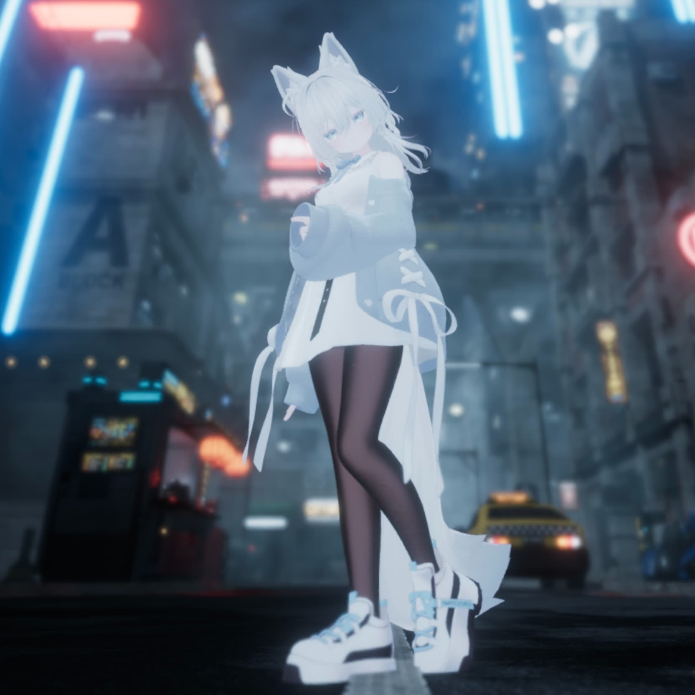

Gallery

Profile

MUGI
Photographer / VR Creator
光や空気感を大切に、 リアルとバーチャルの両方で“記憶に残る瞬間”を撮影しています。 日常の静けさや感情の余白を、 写真として切り取ることをテーマに活動中。
About
リアルとバーチャルの境界にある、 空気感や感情の余白を写真として残しています。 風景、スナップ、ポートレートを中心に、 「その瞬間にしか存在しない光」を大切に撮影しています。 ついでに現像アプリも開発中。
Reality / Virtual Photography

Photographer / VR Creator
光や空気感を大切に、 リアルとバーチャルの両方で“記憶に残る瞬間”を撮影しています。 日常の静けさや感情の余白を、 写真として切り取ることをテーマに活動中。
リアルとバーチャルの境界にある、 空気感や感情の余白を写真として残しています。 風景、スナップ、ポートレートを中心に、 「その瞬間にしか存在しない光」を大切に撮影しています。 ついでに現像アプリも開発中。